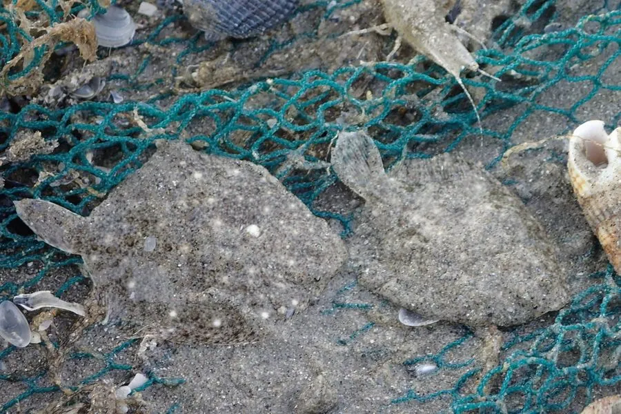

鱼类 · 动物界
多宝鱼 Scophthalmus maximus

体呈菱形、两眼位于左侧的冷水性比目鱼，原产大西洋东北部，中国引进后成为北方海水养殖的重要品种。
- 分类
- 门脊索动物门纲硬骨鱼纲目鲽形目科菱鲆科属菱鲆属
- 栖息环境
- 冷水性沙泥底质海域，养殖多在工厂化水泥池中
- 地理分布
- 原产大西洋东北部、北海和地中海，中国山东、辽宁等地大规模养殖
- 保护级别
- 暂无评估
物种志
多宝鱼体呈菱形，侧扁，两眼位于头部左侧，有眼侧呈灰褐至褐黄色，散布深色斑点和斑块，无眼侧白色。体表光滑无鳞，皮肤富有黏液；背鳍和臀鳍几乎贯穿整个体侧，尾鳍圆形。成鱼体长一般 30–50 cm，体重 1–2 kg，最大可达 10 kg 以上。
多宝鱼原产于大西洋东北部、北海和地中海沿岸，喜欢栖息在水温较低的沙泥底质海域，是典型的冷水性底栖鱼类。它白天常静伏在海底，靠体色与底质融为一体，夜间活动捕食小鱼和甲壳类。20 世纪 90 年代，中国从欧洲引进大菱鲆，在山东、辽宁等地开展工厂化养殖，因其肉质白嫩、生长快而迅速成为北方海水养殖的重要品种。养殖过程中需要把水温控制在 12–18 ℃，并注意病害防控。
形态与习性
- 食性捕食小鱼、虾类和底栖甲壳类
- 体长一般 30–50 cm，体重 1–2 kg
- 外形体呈菱形，两眼位于头部左侧
- 水温适宜生长水温 12–18 ℃
- 养殖20 世纪 90 年代引入中国，工厂化养殖
- 产地原产大西洋东北部和地中海沿岸
趣味知识
- 多宝鱼是冷水鱼，水温超过 20 ℃ 就容易生病。
- 它的体表没有鳞片，摸上去滑腻，靠黏液保护皮肤。
- 这种鱼原产欧洲，如今中国已成为主要养殖和消费国。